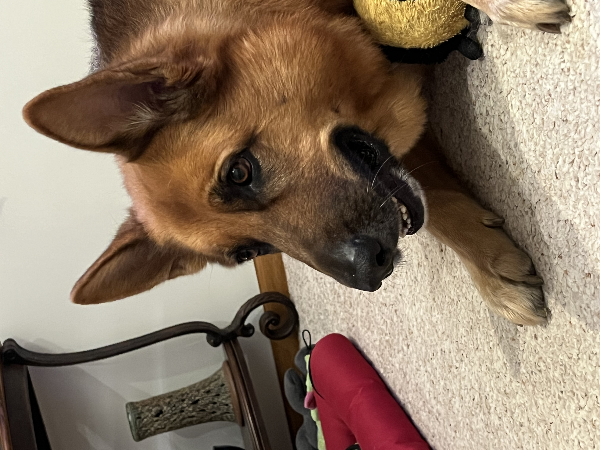
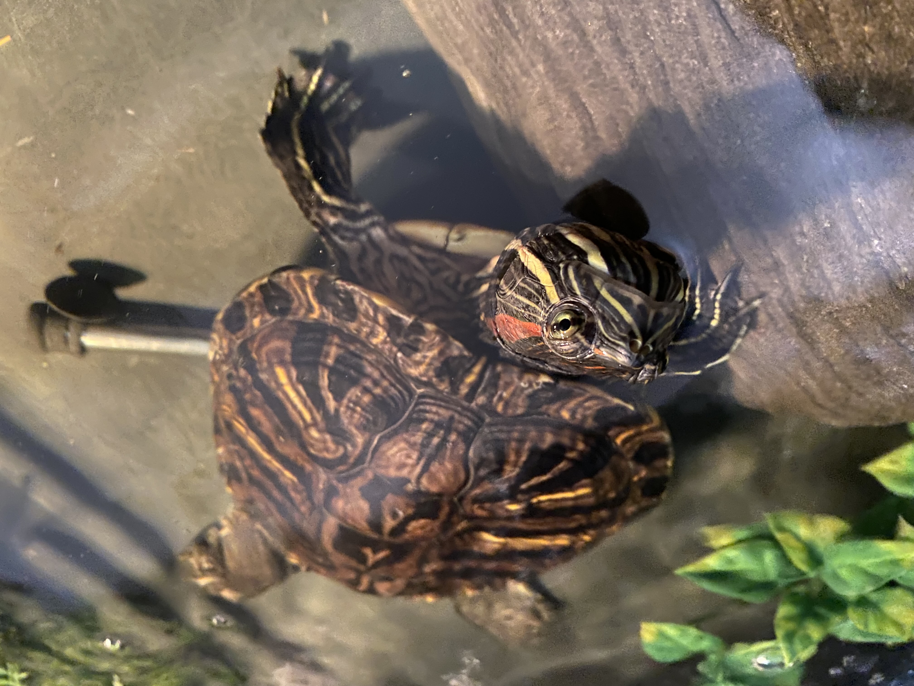
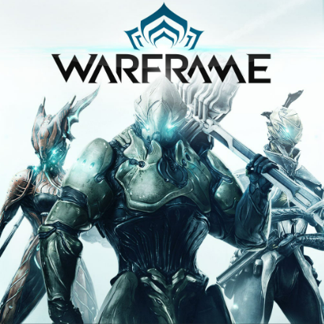
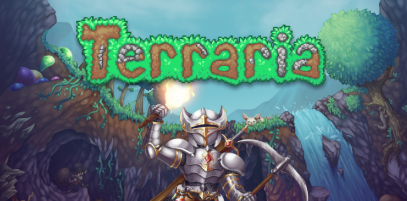
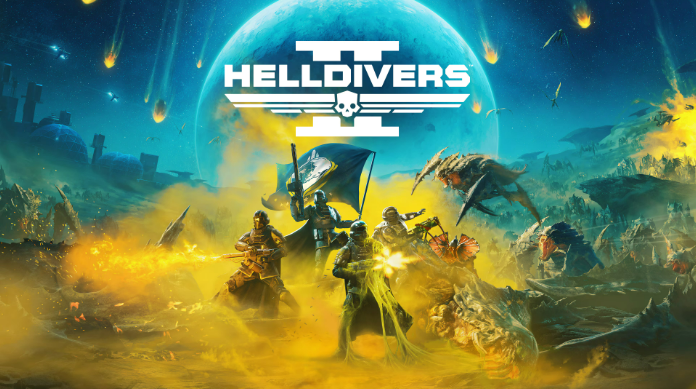
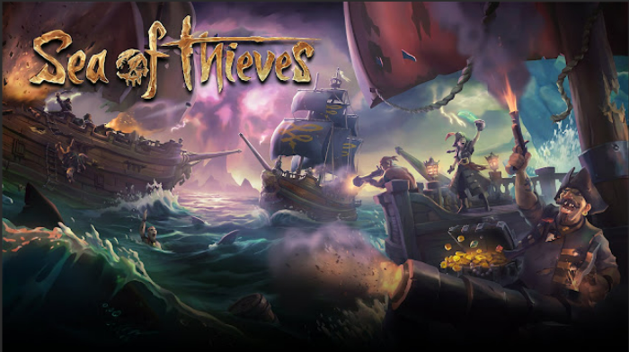
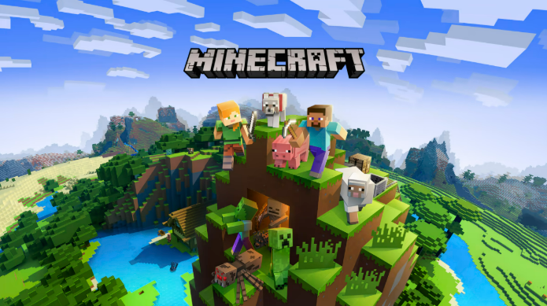
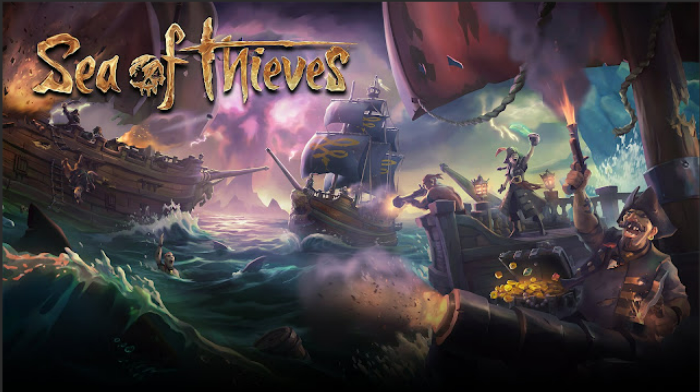
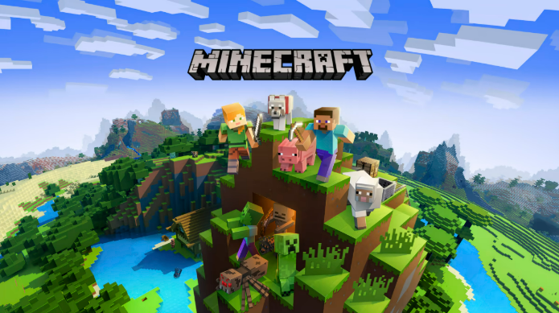
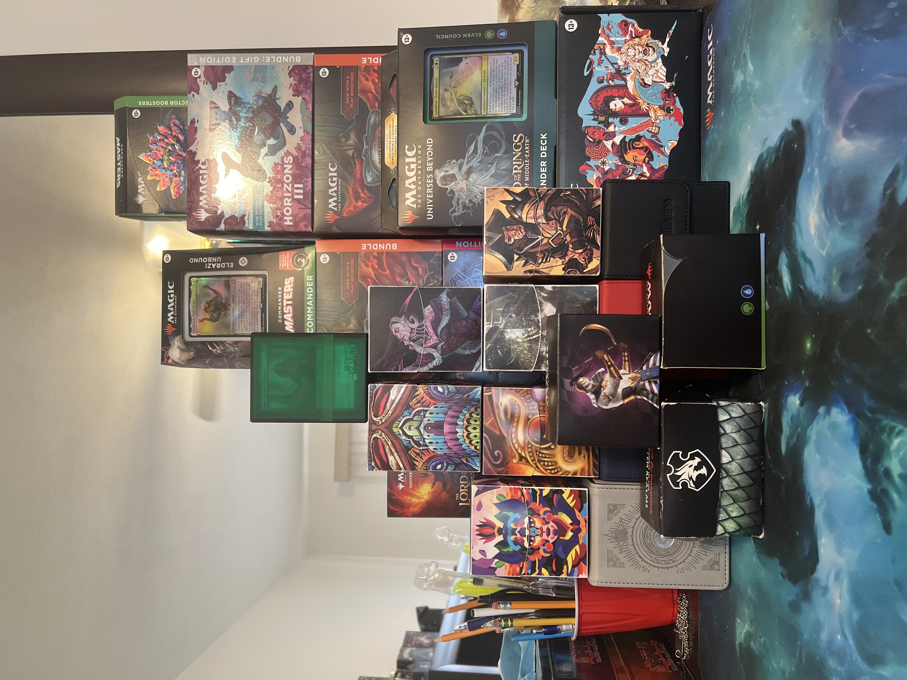

Nice to meet you!
My name is Elian Garcia (pronounced Ellie-on) and I would like to thank you for visiting my page.
About me
My coding experience is quite ranged. I have entry-level knowledge in C++, Java, HTML, and PHP. I enjoy coding, as creating and building new things has always been an activity I greatly enjoy. I have a dog named Jake and a turtle named Ali, both of whom are quite photogenic.
 I had originally attended on-campus courses starting at CalU and then moving to Edinboro, but after the merger and the changes made to the programs I had enrolled under, I decided to switch. Not only to be closer to my family, but also because I found that this program was a much better fit for me. I can't wait to get started with the capstone project, because getting some real group work experience is something I have been looking forward to for quite some time now. Anyway, I would like to thank you for visiting my page, and I hope you have a wonderful day!
Hobbies
When it comes to hobbies, I am a gamer at heart. I play games of all genres and from any era — I am not picky whatsoever. The game I have spent the most time playing is Warframe by quite a large margin. I wouldn’t say it’s my favorite game, but the community and constant additions of new content always have me coming back with every update. Some of my other favorite games are Sea of Thieves, Helldivers 2, Call of Duty: Black Ops 2, Terraria, Minecraft, Rust, and many more.
   



Other Hobby
Another one of my hobbies is playing and collecting Magic: The Gathering cards, and I have accumulated quite the collection over the past four or so years. I had originally played back in elementary school, as it was the thing back then, but I dropped it after it became unpopular. A friend of mine later convinced me to give it another shot, and now that I am older and have a deeper understanding of the game, I quite enjoy playing it. You can see some of my decks on a website called Moxfield, where anyone can create an account to build decks, buy cards, or catalog their personal collection. My Moxfield account is Turtle_E_8 , and I hope you give some of my decks a look. And yes — the prices of a number of those cards are indeed real. I try to keep everything updated, but a few decks I own have yet to be added, though I do plan on adding all of my cards / decks eventually. Below is a stack of my most used decks along with the boxes of my favorite sets and products. I have quite a bit more to show, but most of it is unorganized, and it would take me an eternity to tidy up my collection. Anyway, thank you for reading, and I hope you have a wonderful day.
